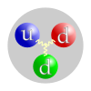

neutron

Definition: The neutron is a subatomic particle, symbol n or n0, which has a neutral (not positive or negative) charge, and a mass slightly greater than that of a proton. Protons and neutrons constitute the nuclei of atoms. Since protons and neutrons behave similarly within the nucleus, and each has a mass of approximately one atomic mass unit, they are both referred to as nucleons. Their properties and interactions are described by nuclear physics. Protons and neutrons are not elementary particles; each is composed of three quarks.
Source: Wikipedia
Wikipedia Page
Wikidata Page
Occurs in: